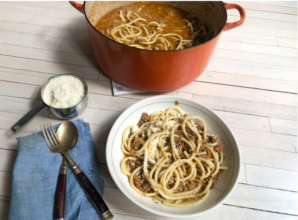

Matty Matheson's One Hour Bolognese

Description
A simpler take on a bolognese. Hearty and rich, great for cold winter's night!
Source
Ingredients
- 1 lb. carrots, peeled and finely chopped
- 1 white onion, finely chopped
- 1 head garlic, cloves sliced
- 1/2 cup olive oil
- 2 lbs. ground beef
- 1/4 cup tomato paste
- 6 cups beef stock or broth
- 1 cup whole milk (or non-dairy alternative)
- 4 egg yolks
- salt and pepper to taste
- 12 oz. to 1 lb. dried pasta of choice
- 1 cup of freshly grated Parmesan cheese
Steps
- In a medium Dutch oven, combine carrot, onion, garlic, and oil. Cook over medium-low heat until onions are translucent.
- Add in ground beef, cook for 5 minutes.
- Add in tomato paste, cook until darkened, about 5 minutes.
- Add beef stock and reduce until sludgy.
- Add in milk, reduce for about 5 minutes.
- Add in egg yolks, stir until glossy. Season bolognese with salt and pepper to taste.
- Fill large pot with salted water. Bring to a boil and throw in spaghetti. Cook until al-dente. Reserve 1/2 cup pasta water.
- Combine cooked pasta and bolognese and stir until pasta is coated. Adjust consistency with pasta sauce.
- Divide amongst plates. Top with Parmesan cheese. Enjoy!